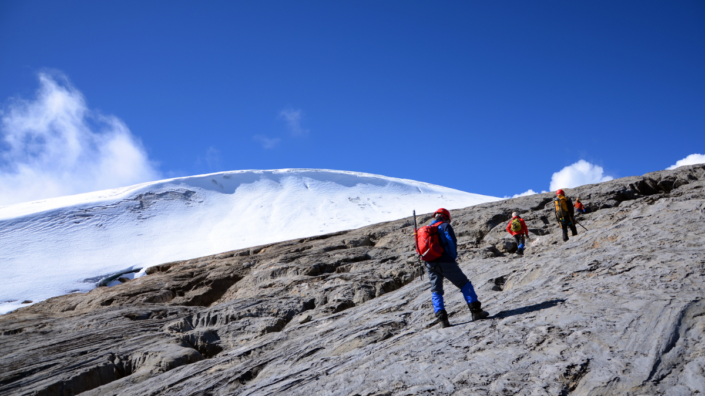

Papua Tengah

Gunung Puncak Jaya
Puncak Jaya Wijaya atau Piramida Carstensz ialah sebuah puncak tertinggi yang menjadi bagian dari
Pegunungan Barisan Sudirman yang terdapat di Kabupaten Mimika, Provinsi Papua Tengah, Indonesia.
Puncak Jaya atau Piramida Carstensz mempunyai ketinggian 4.884 mdpl dan di sekitarnya terdapat
gletser dengan nama yang sama yakni gletser Carstensz, satu-satunya gletser tropika di Indonesia,
yang tersisa dan secara perlahan mulai menipis akibat pemanasan global.
Puncak ini merupakan gunung tertinggi di Indonesia kawasan Oceania. Puncak Jaya adalah salah satu
dari tujuh puncak tertinggi di dunia.
Gunung Latimojong merupakan gunung yang tertinggi di Sulawesi Selatan dengan ketinggian 3.478 meter,
puncaknya yang bernama Bulu Rante Mario. Pegunungan Latimojong ini membentang dari selatan ke utara.
Di sebelah barat Gunung Latimojong adalah Kabupaten Enrekang, sebelah utara Kabupaten Tana Toraja,
sebelah selatan adalah daerah Kabupaten Sidenreng Rappang dan area sebelah timur seluruhnya wilayah
Kabupaten Luwu sampai di pinggir pantai Teluk Bone.
Sejarah
Dataran tinggi di sekitar puncak awalnya sudah dihuni sebelum adanya kontak dengan bangsa Eropa, dan
puncaknya dikenal sebagai Nemangkawi di Amungkal. Puncak Jaya sebelumnya bernama Piramida Carstensz
setelah penjelajah Belanda Jan Carstenszoon menamainya ketika pertama kali melihat gletser di puncak
gunung pada hari yang cerah pada tahun 1623.
Padang salju (gletser) Puncak Jaya berhasil didaki pada awal tahun 1909 oleh seorang penjelajah
Belanda, Hendrikus Albertus Lorentz dengan enam orang suku Kenyah yang direkrut dari Apau Kayan di
Kalimantan Utara. Taman Nasional Lorentz yang juga meliputi Piramida Carstensz, didirikan pada tahun
1919 menyusul laporan ekspedisi ini.